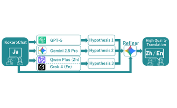
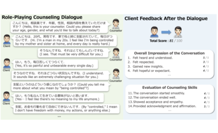
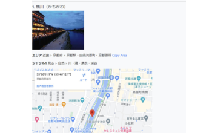
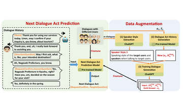
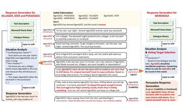

Zhiyang Qi | 斉志揚 🧑🚀
I am a postdoctoral researcher at
The University of Tokyo , working in
Toriumi Lab on
Informational Wellbeing
.
I am also interested in dialogue systems and psychological counseling AI .
I am happy to contribute to collaborative projects through online discussions, especially by sharing ideas, feedback, and research perspectives.
I can also support figure design and academic writing. Please feel free to contact me!
Personal Email
/
Google Scholar
Selected Publications
Selected work from journals and refereed international conferences. View all publications .

Multilingual KokoroChat: A Multi-LLM Ensemble Translation Method for Creating a Multilingual Counseling Dialogue Dataset Ryoma Suzuki, Zhiyang Qi , and Michimasa Inaba.
LREC 2026

KokoroChat: A Japanese Psychological Counseling Dialogue Dataset Collected via Role-Playing by Trained Counselors Zhiyang Qi , Takumasa Kaneko, Keiko Takamizo, Mariko Ukiyo, and Michimasa Inaba.
ACL 2025 Main

Collection and Analysis of Travel Agency Task Dialogues with Age-Diverse Speakers Michimasa Inaba, Yuya Chiba, Zhiyang Qi , Ryuichiro Higashinaka, Kazunori Komatani, Yusuke Miyao, and Takayuki Nagai.
ACM Transactions on Asian and Low-Resource Language Information Processing, 2024.

Data Augmentation Integrating Dialogue Flow and Style to Adapt Spoken Dialogue Systems to Low-Resource User Groups Zhiyang Qi and Michimasa Inaba.
SIGDIAL 2024

Enhancing Dialogue Generation in Werewolf Game Through Situation Analysis and Persuasion Strategies Zhiyang Qi and Michimasa Inaba.
AIWolfDial Workshop at INLG 2024 (Best Win Rate and Game Action Award)
Work Experience
2026.04 - Present , Project Researcher, The University of Tokyo , Tokyo, Japan.Supervisor: Fujio Toriumi . 2026.05 - 2026.08 , Researcher, The University of Electro-Communications , Tokyo, Japan.Supervisor: Maki Sakamoto . 2025.04 - 2026.03 , Research Assistant, The University of Electro-Communications , Tokyo, Japan.Supervisor: Maki Sakamoto .
Awards and Honors
2026.03 言語処理学会第32回年次大会 (NLP2026) 優秀賞, selected 13/789 papers.2024.09 AIWolfDial 2024: Best Win Rate and Game Action Award; Best Subjective Evaluation Award.2024.09 第19回YANSシンポジウム ハッカソン, YANS運営委員特別賞.2023.12 対話システムライブコンペティション6 シチュエーショントラック, 優秀賞.
Education
2023.04 - 2026.03 , Ph.D. in Informatics, The University of Electro-Communications , Tokyo, Japan.Advisor: Michimasa Inaba . 2021.04 - 2023.03 , M.S. in Informatics, The University of Electro-Communications , Tokyo, Japan.Advisor: Michimasa Inaba . 2015.09 - 2019.06 , B.S. in Software Engineering, Qingdao University of Science & Technology , Qingdao, China.Advisor: Zhen Sun.